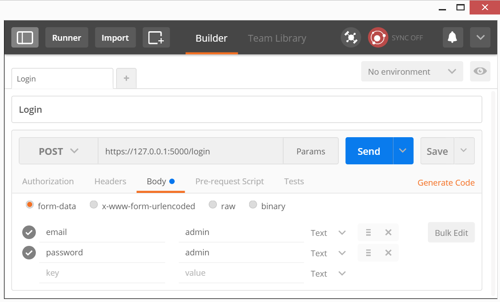
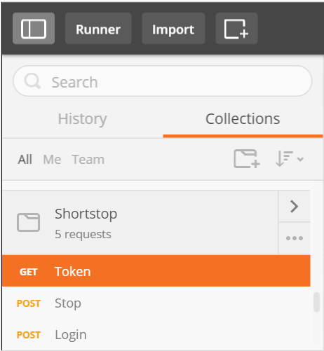
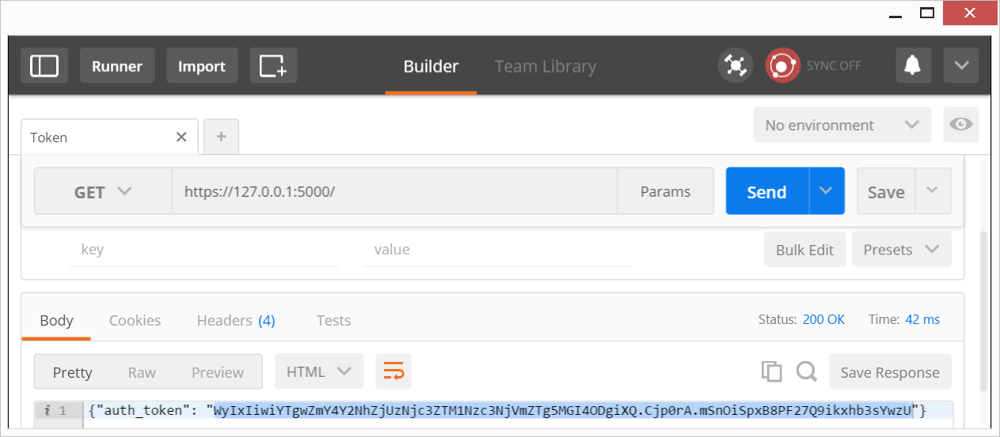
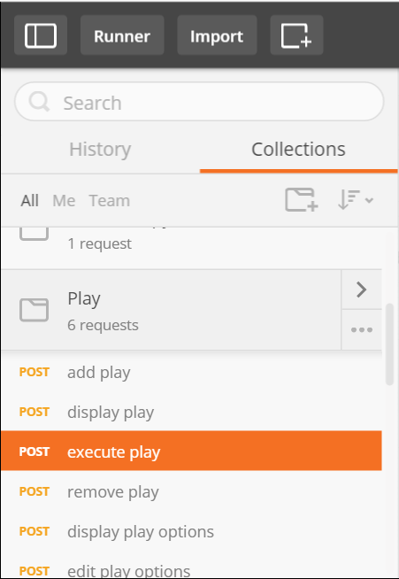
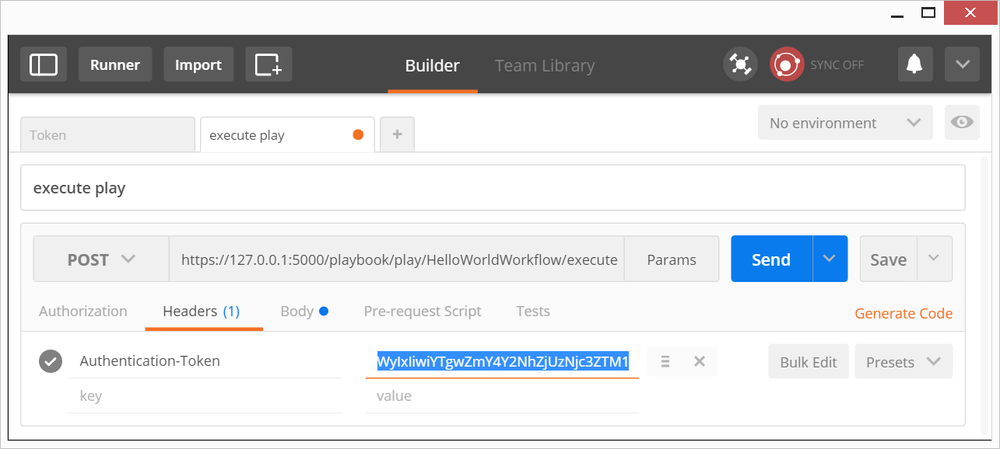
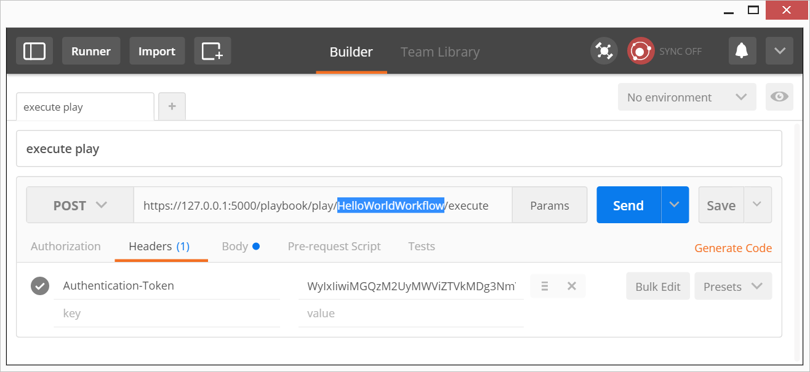

WALKOFF Documentation Current version 0.5.0b
Getting Started
Setup
The following has been successfully tested on: Linux, Mac OSX, and Windows.
- Download https://github.com/iadgov/WALKOFF
- Install python2.7.9 or later
- run setup.py to install dependencies automatically
- Note: To run the web server in https; certificates must be placed by default in the data folder. (These paths can be changed in the configuration)
Walkthrough
Executing a Basic Workflow
This section covers running an example workflow by making calls through WALKOFF's REST api.
Start service
- run main.py in walkoff dir to start the service, displays:
* Running on https://127.0.0.1:5000/
Postman
The following assumes use of the chrome app Postman, though any rest capable tools may be used.
- In Chrome | app-store | search for postman rest client | Add to Chrome
Import predefined rest commands
- In Postman | Settings | Data | Choose Files | Open: walkoff\data\debug\Backup.postman_dump.json
Login
- Show sidebar | Shortstop | Login
- In Login | Send 
- If you see

 Bring up a Chrome window (not postman), visit https://127.0.0.1:5000/login, click connect anyway, when you see the login form return to postman and try loging in again.
Bring up a Chrome window (not postman), visit https://127.0.0.1:5000/login, click connect anyway, when you see the login form return to postman and try loging in again.
Running Hello World Workflow
An authentication token is required to execute a workflow. Request a token and use it in the execute play command for the hello world workflow.
- Show sidebar | Shortstop | Get Token | Send 
- In Token | GET https://127.0.0.1:5000/ | Send | Copy auth_token value 
- Show sidebar | Play | POST Execute Play 
- In Execute Play | Headers | Authentication-Token | Paste token 
- In Execute Play | POST | Ensure HelloWorldWorkflow is in URL: https://127.0.0.1:5000/playbook/play/HelloWorldWorkflow/execute 
- click Save
- click Send
- web server displays:

127.0.0.1 - - [02/Jun/2016 09:47:08] "POST /playbook/play/HelloWorldWorkflow/execute HTTP/1.1" 200 -
I SAY THIS BEFORE EVERY FUNCTION: HELLO WORLD